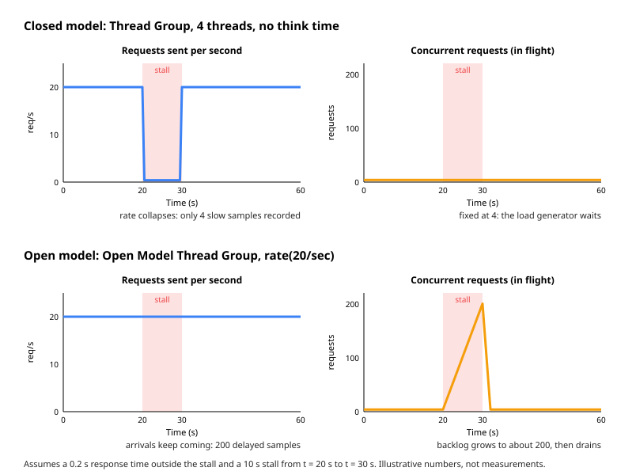

Open Model & Throughput Control
|
This content was generated with the assistance of AI and should be verified against the official documentation before being relied on in production. |
This page was written against Apache JMeter 5.6.3, the latest release on 2026-10-14 (Java 8 or later, Java 17 or later
recommended; the examples assume Java 17 or 21). JMeter 6.0 is not released: the change planned for it on the
apache/jmeter master branch that affects this page (delays of the Open Model Thread Group and the Precise Throughput
Timer measured from the start of the Thread Group, issue 6352 in xdocs/changes.xml) is described as planned, not as
released behaviour. Plugin alternatives mentioned at the end (the Arrivals Thread Group and the Throughput Shaping Timer
from jmeter-plugins.org) are installed with the JMeter Plugins Manager 2.0; they are only named here and are covered by
the custom thread groups page of this section.
The classic Thread Group answers the question "how many users?". Many requirements are phrased differently: "the search endpoint must sustain 20 requests per second", "the API receives 15000 loans per hour at peak". This page is about load that is defined by a rate. It covers the difference between a concurrency-driven (closed) and an arrival-rate-driven (open) workload, why the closed model can hide latency, the one core thread group that generates an open workload (the Open Model Thread Group), the two core timers that put a throughput target on a closed model (the Constant Throughput Timer and the Precise Throughput Timer), the controller whose name suggests throughput but which controls something else (the Throughput Controller), and a decision guide. It ends with the same Bookshelf target, 20 requests per second, reached with each option.
The concepts behind this page (test types, Little’s Law, percentiles and the closed versus open distinction) are
introduced in Performance Testing Fundamentals; this page
applies them. The Thread Group fields (threads, ramp-up, loops, duration) are described in
Thread Groups: Concurrent Users & Ramp-up, the
other timers in Timers & Think Time, and the Transaction Controller and
the other controllers in Logic Controllers & Transactions.
Timer scoping (a timer applies to every sampler in its scope, and timers in scope add up) is explained in
Test Plan Elements, Execution Order &
Scoping, and the ${__P(...)} and ${__groovy(...)} functions used in schedules in
Properties, Variables & Functions. For a Spring Boot
service as the system under test, see Performance Testing with
JMeter in the SpringBoot Reference.
Concurrency-driven versus arrival-rate-driven load
A closed workload has a fixed population. In JMeter’s Thread Group every thread is a user that sends a request, waits for the response, runs its timers and sends the next request. The number of threads is the input; the request rate is an output that depends on how fast the server answers. Little’s Law ties the three together for averages in steady state: \(X = N / (R + Z)\), where \(N\) is the number of threads, \(R\) the response time and \(Z\) the think time (see Little’s Law).
An open workload has an arrival process. New work arrives at a rate that does not depend on how fast the server answers, as independent visitors do on a public API. The arrival rate is the input, and the number of requests in flight is the output: \(N = X \times R\). When the server slows down, the arrivals keep coming and concurrency grows.
| Aspect | Closed (concurrency-driven) | Open (arrival-rate-driven) |
|---|---|---|
What you configure |
Number of threads, think time |
Arrivals per second (a schedule) |
What you measure as an outcome |
Throughput |
Concurrency and backlog |
When the server stalls |
Threads wait, the request rate falls |
Arrivals continue, requests pile up |
Effect on the results |
Slow periods are under-represented (coordinated omission) |
Slow periods are fully represented |
Load generator risk |
Bounded: never more than N threads |
Unbounded unless timeouts cap the time in flight |
Core JMeter elements |
Thread Group, plus Constant or Precise Throughput Timer as a cap |
Open Model Thread Group (5.5, experimental) |
The throughput timers sit in between: they slow down a closed population so that it does not exceed a target rate. They cannot create load that the threads do not have time to send, so the model is still closed underneath. The Precise Throughput Timer component reference states this directly: the timer does not generate threads, so the resulting throughput is lower if the server cannot keep up or if there are not enough threads.
Why the closed model hides latency
The JMeter best-practices page warns that a load test with incorrectly sized threads faces the "Coordinated Omission" problem, which can give wrong or inaccurate results. The page does not explain the mechanism; the explanation below is a worked illustration of the closed versus open behaviour, with numbers chosen for this page.
Take a Bookshelf search endpoint with a response time of 0.2 s, driven for 60 s at 20 requests per second, and a server stall of 10 s between t = 20 s and t = 30 s (a long garbage collection pause or a lock held by a batch job).
-
Closed model, a Thread Group of 4 threads with no think time: \(X = 4 / 0.2 = 20\) requests per second. When the stall begins, each of the 4 threads has one request in flight and waits for it. During the stall almost nothing is sent. The run records about \(50 \times 20 = 1000\) fast samples and 4 slow samples of about 10 s. Only \(4 / 1004 \approx 0.4\,\%\) of the samples are slow, so the 99th percentile is still about 0.2 s.
-
Open model at 20 arrivals per second: the 200 requests that arrive during the stall are all delayed, by between 0 and 10 s (5 s on average). They are \(200 / 1200 \approx 16.7\,\%\) of the 1200 samples. The 90th percentile (the slowest 120 samples, all among the 200 delayed ones) is about 4 s, and the 99th percentile (the slowest 12) is about 9.4 s.
Same server, same stall, same average rate: the closed run reports a healthy p99 of 0.2 s and the open run a p99 of more than 9 s. The open result is what 20 independent users per second would have experienced. The figure shows the two runs side by side.

The closed model is not wrong; it is the right model when the population really is fixed (an internal tool with 50 operators, a pool of 8 batch workers). It is the wrong model for traffic whose arrivals do not wait for the previous response, which is most public HTTP traffic. If a closed model must be used for open traffic, give it enough threads that the population never runs out during a slow period, and read the percentiles with this bias in mind.
Which load model?
The decision flow below summarises the rest of the page. Start from what the requirement actually fixes: a population of users or an arrival rate.
The rest of the page describes each element in detail, then compares them in Choosing between them.
Open Model Thread Group
The Open Model Thread Group was added in JMeter 5.5 and is still marked experimental in 5.6.3: the component reference warns that it might change in future releases. It "defines a pool of users that will execute a particular test case against the server", generated according to a schedule. Menu path: right-click the Test Plan, Add → Threads (Users) → Open Model Thread Group.
How it runs
The component reference describes the schedule; the runtime behaviour below is what the 5.6.3 source code of the
element does (the class documentation of OpenModelThreadGroup and OpenModelThreadGroupController), since the manual
does not describe it:
-
Each arrival is a new thread. At every scheduled arrival time a new JMeter thread is created and started. The class documentation says threads are created on demand, every thread exits after completion, and the maximum number of threads is not limited.
-
Each thread runs the children once. The controller of the Open Model Thread Group stops after one iteration, so one arrival is one pass through the elements under the thread group: a single request if there is one sampler, a whole journey if there are five. The rate in the schedule is therefore a rate of iterations, not of samples.
-
Each thread gets its own copy of the test tree, as in the classic Thread Group, so the per-thread state (variables, the Cookie Manager’s cookies, extracted tokens) starts fresh for every arrival.
-
The schedule is computed once at the start. The component reference states that the load profile is evaluated at the beginning of the test only, so a dynamic function in the schedule contributes only its first result.
-
Threads are interrupted when the schedule ends. The thread group terminates its threads as soon as the schedule ends (after all arrivals and pause intervals). The manual suggests ending the schedule with a
pause(...)to give the last arrivals time to finish; see The trailing pause.
Because every arrival is a new user, a journey under the Open Model Thread Group usually starts with its own log-in, and a CSV Data Set Config with the default sharing mode hands each arrival the next line of the file. This is exactly how independent visitors behave, but it differs from a Thread Group where one thread logs in once and loops.
GUI fields and properties
The component reference lists three parameters. The 5.6.3 GUI also shows the panel common to all thread groups, Action to be taken after a Sampler error, which comes from the shared thread group GUI class.
| Field | Description | JMX property | Required |
|---|---|---|---|
Name |
Descriptive name shown in the tree. |
|
No |
Comments |
Free text. |
|
No |
Action to be taken after a Sampler error |
Continue, Start Next Thread Loop, Stop Thread, Stop Test or Stop Test Now, as in the Thread Group. Because each thread runs a single iteration, Start Next Thread Loop and Stop Thread both end the current arrival in practice (an inference from the source, not a documented statement). |
|
Yes |
Schedule |
The expression that configures the schedule, for example |
|
Yes |
Random Seed (change from 0 to random) |
0 means the schedule is truly random and differs between runs. A constant non-zero seed generates the same arrival times on each test start. The manual advises giving different thread groups different seeds. |
|
No |
There is no field for the maximum number of threads, and no ramp-up or duration field: the schedule defines both
the ramp and the duration. In 5.6.3 the GUI editor offers four template buttons above the schedule text area that insert
rate(1/min), random_arrivals(10 min), pause(1 min) and /* comment */, and below it a summary line of
the form Total duration: …, max rate: … and a small chart of the target rate over time. The summary and the chart
are recomputed as you type, which is the quickest way to check a schedule before running it.
The schedule language
A schedule is a sequence of commands separated by spaces or new lines. The load profile is a sequence of constant, increasing or decreasing load segments.
| Command | Meaning (from the component reference) |
|---|---|
|
Sets the target load rate. Units are |
|
A segment of random arrivals with the given duration. The starting rate is the rate configured before it, the finishing rate the one configured after it. The implicit rate at the start of the test is 0. If no finishing rate follows (or several |
|
Even arrivals. Not implemented yet (the manual says so explicitly); do not use it. |
|
No new arrivals for the given duration. The rate is restored after the pause. The pause is always honoured, even if all the scenarios are complete. |
|
A block comment, to explain the schedule or temporarily disable steps. Comments cannot be nested. |
|
A line comment, up to the end of the line. |
The rules about the implicit start and finish rates are the part most often misread. The manual gives these equivalences:
| Schedule | Meaning |
|---|---|
|
Linear increase from 1 to 3 requests per second over two minutes. |
|
Same as |
|
1 per second for two minutes, then a linear increase from 1 to 4 per second over three minutes. |
|
Ramp from 0 to 10 per second in a minute, hold a minute, ramp down to 0 in a minute. |
|
10 per second for a minute, a two-second pause, 10 per second for another minute. |
|
Lasts 61 minutes regardless of how long the individual scenarios take, because the pause is always honoured. |
Two details matter when writing schedules by hand. First, a bare number in rate without a unit is only documented for
0; always write the unit, for example rate(10/sec), so the intent is clear (the manual’s own example
rate(10) random_arrivals(1 min) ... is described as 10 requests per second, but relying on that is not necessary).
Second, "random arrivals" means the gaps between arrivals are random, as they are for independent visitors; the
average rate follows the schedule, but individual seconds contain more or fewer arrivals than the target.
The Bookshelf arrival-rate profile
The section’s arrival-rate profile ramps from 5 to 20 arrivals per second over five minutes. Written out with comments:
/* Bookshelf arrival-rate profile: one arrival = one search request */
rate(5/sec) random_arrivals(5 min) rate(20/sec) // ramp from 5/s to 20/s in 5 minutes
random_arrivals(10 min) // hold 20/s for 10 minutes
pause(1 min) // let in-flight requests finishWorked numbers: the ramp segment averages \((5 + 20) / 2 = 12.5\) arrivals per second for 300 s, about 3750 arrivals; the hold segment is \(20 \times 600 = 12000\) arrivals; the pause adds none. The run lasts 16 minutes and sends about 15750 requests. With a search response time of 0.2 s, Little’s Law gives an average of \(20 \times 0.2 = 4\) requests in flight at full rate, so roughly 4 threads alive at any moment even though 15750 threads are created in total.
Functions in schedules and generated step patterns
The schedule field accepts JMeter functions, which are evaluated once when the test starts. The manual shows two uses.
Parameterise from properties. Read the rates and the duration from -J properties so that one plan serves the
smoke, load and soak runs:
rate(${__P(beginRate,5)}/sec) random_arrivals(${__P(rampMinutes,5)} min) rate(${__P(endRate,20)}/sec)
random_arrivals(${__P(holdMinutes,10)} min)
pause(1 min)jmeter -n -t bookshelf-load.jmx -l soak.jtl -JbeginRate=0 -JendRate=5 -JrampMinutes=2 -JholdMinutes=480The manual’s own form is rate(${__P(beginRate,40)}) random_arrivals(${__P(testDuration, 10)} sec) rate(${__P(endRate,40)});
the variant above writes the units explicitly.
Generate steps with Groovy. The schedule language has no loop, but __groovy can build the string. The manual’s
example generates ten 10-second steps of 10, 20, …, 100 arrivals per second:
${__groovy((1..10).collect { "rate(" + it*10 + "/sec) random_arrivals(10 sec) pause(1 sec)" }.join(" "))}For a Bookshelf stress test that climbs in eight two-minute steps from 5 to 40 arrivals per second:
${__groovy((1..8).collect { "rate(" + it*5 + "/sec) random_arrivals(2 min) pause(1 sec)" }.join(" "))}This expands to rate(5/sec) random_arrivals(2 min) pause(1 sec) rate(10/sec) random_arrivals(2 min) pause(1 sec) ....
Each step is a constant segment (no finishing rate follows random_arrivals directly), followed by a one-second pause
with no new arrivals, which is how the manual’s example builds its steps. The whole schedule lasts
\(8 \times 121 = 968\) s. Function arguments that contain a comma must escape it as \,; neither script above contains
one. Because the profile is evaluated once, a function such as __time or __Random in the schedule yields a
single value for the whole run, not a changing rate.
Seed and repeatability
With the default seed 0 the arrival times differ on every run. Set a constant non-zero seed (any number, for example
42) when two runs must be compared second by second, for instance before and after a code change, so that the same
burst of close arrivals happens at the same moment both times. Give each Open Model Thread Group in a plan a different
seed; the manual recommends different seeds per thread group, and identical seeds with identical schedules would fire
arrivals at the same instants.
Thread limits and load generator cost
There is no upper bound on the number of threads in 5.6.3. The number alive at any moment is the arrival rate multiplied by the time each arrival spends in the plan (its journey time, including timers). This is the open model working as intended, but it has consequences for the load generator:
-
Thread creation per arrival. Every arrival creates a thread and clones the thread group’s test tree. At 20 arrivals per second this is negligible; at thousands per second, cloning a large plan (many samplers, assertions and post-processors) costs CPU and produces garbage. Keep the subtree under an Open Model Thread Group lean, as the best-practices page recommends for every plan.
-
A stall multiplies threads. In the stall example above, 200 threads were alive at the end of the 10 s stall instead of 4. At 500 arrivals per second a 30 s stall means 15000 threads, each with its own stack and cloned tree, which can exhaust the heap or the operating system’s thread limit.
-
Timeouts bound the backlog. Set the Connect and Response timeouts on the HTTP Request (or in HTTP Request Defaults). The maximum number of threads in flight is then roughly the arrival rate multiplied by the longest possible journey time. For the Bookshelf profile, 20 arrivals per second with a 5 s response timeout caps the search backlog near \(20 \times 5 = 100\) threads.
-
Watch the generator. Monitor the generator’s CPU and heap during the first runs. If the generator saturates, it delays arrivals and the open model quietly turns into something else.
The heap and the HEAP setting are covered in
Installation & Configuration.
The trailing pause
The thread group interrupts its threads when the schedule ends. A schedule that ends with random_arrivals(10 min)
stops the arrivals at 10 minutes and interrupts any request still in flight at that instant, which shows up as errors
in the last second of the results. The manual’s advice is to add a pause at the end, for example pause(5 min), to
give the threads time to complete. Size the pause to the longest journey: a one-minute pause is plenty for a 5 s
Bookshelf journey. The pause is always honoured, so the run lasts the full pause even if every thread finishes
earlier; with a long pause the run simply ends later.
A complete fragment
Menu path: right-click Test Plan, Add → Threads (Users) → Open Model Thread Group. Set the schedule and the seed, then add an HTTP Request sampler under it (Add → Sampler → HTTP Request). The resulting fragment, with the HTTP Request Defaults omitted, is:
<OpenModelThreadGroup guiclass="OpenModelThreadGroupGui" testclass="OpenModelThreadGroup" testname="Search arrivals">
<elementProp name="ThreadGroup.main_controller" elementType="OpenModelThreadGroupController"/>
<stringProp name="ThreadGroup.on_sample_error">continue</stringProp>
<stringProp name="OpenModelThreadGroup.schedule">rate(5/sec) random_arrivals(5 min) rate(20/sec) random_arrivals(10 min) pause(1 min)</stringProp>
<stringProp name="OpenModelThreadGroup.random_seed">42</stringProp>
</OpenModelThreadGroup>
<hashTree>
<HTTPSamplerProxy guiclass="HttpTestSampleGui" testclass="HTTPSamplerProxy" testname="Search books">
<stringProp name="HTTPSampler.domain">localhost</stringProp>
<stringProp name="HTTPSampler.port">8080</stringProp>
<stringProp name="HTTPSampler.protocol">http</stringProp>
<stringProp name="HTTPSampler.path">/api/books?query=${term}</stringProp>
<stringProp name="HTTPSampler.method">GET</stringProp>
<stringProp name="HTTPSampler.connect_timeout">2000</stringProp>
<stringProp name="HTTPSampler.response_timeout">5000</stringProp>
</HTTPSamplerProxy>
<hashTree/>
</hashTree>The property names come from the 5.6.3 schema classes (OpenModelThreadGroup.schedule,
OpenModelThreadGroup.random_seed, ThreadGroup.on_sample_error). Save the plan from the GUI to get the exact form
your JMeter version writes.
The 6.0 timing change
In 5.6.3 the arrival times are offsets from the start of the test. An Open Model Thread Group that starts late, for
example after a setUp Thread Group that seeds data for 30 s, or when Run Thread Groups consecutively is ticked on the
Test Plan, is already behind its schedule when it begins. The 5.6.3 source starts overdue arrivals immediately, so the
first 30 s of the schedule are released as a burst. Until 6.0, avoid placing an Open Model Thread Group after other
thread groups in a consecutive run, or start the schedule with a pause(...) that covers the setUp phase.
Planned for 6.0 (per xdocs/changes.xml on the master branch, issue 6352): delays in the Open Model Thread Group and
the Precise Throughput Timer are calculated relative to the start of the Thread Group instead of the start of the test.
Once released, a late-starting Open Model Thread Group runs its schedule from its own start.
Pitfalls
-
Schedule rate is per iteration. With a five-request journey under the thread group,
rate(4/sec)produces about 20 requests per second, not 4. -
Experimental status. The element and its JMX format may change; keep plans that use it under version control and re-test them after upgrades.
-
even_arrivalsdoes nothing useful yet. It is listed but not implemented. -
No think time between iterations. There is no "next iteration" for a thread, so pacing between journeys comes only from the schedule. Timers inside the journey still apply between its steps.
-
Functions evaluate once. A schedule cannot react to the test in progress; for a rate that changes during the run use a Constant Throughput Timer driven by a property (see below).
-
Distributed testing multiplies the rate. Every remote server runs the whole plan, so three generators each running
rate(20/sec)produce 60 arrivals per second. Divide the rate by the number of servers, for example with${__P(rate,20)}and a-Gproperty.
Constant Throughput Timer
The Constant Throughput Timer introduces variable pauses calculated to keep the total throughput, in samples per minute, as close as possible to a target. It is a timer: it can only delay samplers, so the throughput is lower if the server cannot handle it, or if other timers or slow elements prevent it. Despite the name the target does not have to be constant; it can be a variable or function and can change during the test. Menu path: on the Thread Group (or on a sampler), Add → Timer → Constant Throughput Timer.
Fields and calculation modes
| Field | Description | JMX property | Required |
|---|---|---|---|
Name |
Descriptive name shown in the tree. |
|
No |
Target throughput (in samples per minute) |
The throughput the timer tries to generate, per minute. For 20 requests per second enter 1200. Accepts |
|
Yes |
Calculate Throughput based on |
How the target is shared between threads; see the next table. Default: this thread only. |
|
Yes |
| Calculate Throughput based on | calcMode |
Behaviour (from the component reference) |
|---|---|---|
this thread only |
0 |
Each thread tries to maintain the target on its own. The overall throughput is proportional to the number of active threads. |
all active threads |
1 |
The target is divided among the active threads of all thread groups. Each thread delays based on when it last ran. Every other thread group needs a Constant Throughput Timer with the same settings. |
all active threads in current thread group |
2 |
The target is divided among the active threads of this thread group. Each thread delays based on when it last ran. |
all active threads (shared) |
3 |
As "all active threads", but each thread is delayed based on when any thread last ran. |
all active threads in current thread group (shared) |
4 |
As "all active threads in current thread group", but each thread is delayed based on when any thread in the group last ran. |
The calcMode index is the position of the mode in the timer’s enumeration as written by the 5.6.3 GUI; older plans
may store the mode as its English label instead (for example this thread only), and JMeter loads both. The manual
compares the two families: both aim at the target and give similar results; the shared algorithm gives a more accurate
overall rate, the non-shared one a more even spread of samples across threads.
What the timer counts
The target counts samples from all affected samplers, that is, from every sampler in the timer’s scope. Placed directly under a Thread Group whose journey has five HTTP Requests, a target of 1200 per minute means 1200 HTTP samples per minute in total, about 4 journeys per second. Placed as the child of a single sampler, it counts only that sampler’s samples. Like every timer it runs before each sampler in scope, so the delay is spread over the journey’s steps.
Changing the rate during a run
The manual lists ways to vary the target: a counter variable, a __jexl3 or __groovy function that returns a
changing value, or changing a JMeter property through the remote BeanShell server. The best-practices page gives a
worked BeanShell-server example for a Constant Throughput Timer defined as ${__P(throughput)}. That server only
starts when its port is configured, and the best-practices page warns that it has no security (anyone who can
reach the port gets unrestricted access to JMeter and the host), so prefer a schedule known in advance
(Open Model Thread Group) when you can. The manual also warns that the value should not be changed too often, because it
takes a while for a new value to take effect.
Limits
-
Per minute, not per second. Entering 20 when 20 per second is meant gives one sample every three seconds.
-
The default mode multiplies. With this thread only, a target of 1200 and 10 threads aims at 12000 samples per minute (200 per second). For a total target, choose one of the thread-group or all-threads modes.
-
It only slows down. If the threads cannot reach the target (too few threads, slow responses, other timers), the timer adds no delay and the rate stays below target. The threads must be able to produce more than the target.
-
Timers add up. Think-time timers in the same scope are added to the Constant Throughput Timer’s delay; the combined delay can push the rate below target. Either size the threads for the sum or let the throughput timer be the only pacing.
-
Even spacing. The Precise Throughput Timer page notes that the Constant Throughput Timer converges to the rate but tends to produce samples at even intervals. Real arrivals are bursty; evenly spaced samples hide concurrency problems.
-
Still a closed model. During a stall the threads wait like any closed-model threads, so coordinated omission applies.
Example: 1200 samples per minute for the Bookshelf journey
Menu path: select the Bookshelf Thread Group, Add → Timer → Constant Throughput Timer. Set Target throughput to
${__P(samplesPerMinute,1200)} and Calculate Throughput based on to all active threads in current thread group
(shared).
<ConstantThroughputTimer guiclass="TestBeanGUI" testclass="ConstantThroughputTimer" testname="Cap at 1200 samples/min">
<intProp name="calcMode">4</intProp>
<stringProp name="throughput">${__P(samplesPerMinute,1200)}</stringProp>
</ConstantThroughputTimer>
<hashTree/>A literal target is written by the GUI as a doubleProp named throughput; an expression is stored as a
stringProp, as above.
Precise Throughput Timer
The Precise Throughput Timer (added in JMeter 4.0) also introduces variable pauses to keep the total throughput close to a target, but it builds a schedule of Poisson arrivals at test start and releases threads according to it. The component reference adds that the Open Model Thread Group would in many cases be a better choice for generating a load profile. It is still useful when the plan must keep a closed population (for example to reuse logged-in sessions) and the arrivals should be random, or when a business requirement says "exactly N per period". Menu path: Add → Timer → Precise Throughput Timer.
Fields
| Field | Description | JMX property (default) | Required |
|---|---|---|---|
Name |
Descriptive name shown in the tree. |
|
No |
Target throughput (in samples per "throughput period") |
Maximum number of samples per throughput period, including all threads in the group, from all affected samplers. |
|
Yes |
Throughput period (seconds) |
The period of the target. Throughput 42 with a period of 21 s gives 2 samples per second. |
|
Yes |
Test duration (seconds) |
Ensures throughput x duration samples during that timeframe. It does not limit the test duration; it is a hint for the schedule. |
|
Yes |
Number of threads in the batch (threads) |
Batched departures: above 1, that many threads leave the timer together. The average throughput still meets the target. |
|
Yes |
Delay between threads in the batch (ms) |
With 42 ms and a batch of 3, threads depart at x, x + 42 ms and x + 84 ms. |
|
Yes |
Random seed (change from 0 to random) |
0 means truly random (different on each run); a constant non-zero seed repeats the same delays. Use different seeds for different timers. |
|
Yes |
The timer also has two hidden properties, not shown in the GUI or in the component reference but present in the 5.6.3
bean description: exactLimit ("Use approximate throughput when sequence length exceeds (samples)", default 10000) and
allowedThroughputSurplus ("Allowed throughput surplus (percents)", default 1.0). Leave them at their defaults.
Throughput, period and duration
The three numbers express a business requirement, not just a rate. The manual’s example: 60 iterations per hour is Target throughput 60, Throughput period 3600, Test duration 3600. The pairs 60/3600, 30/1800 and 120/7200 are the same rate; pick the one that matches how the requirement is phrased. Test duration makes the timer generate exactly throughput x duration / period samples in that window instead of "about" that many: a plain Poisson process at 1 per second can produce 50 samples in a 60 s test, which is hard to explain to the business. For a 5-minute run of a 60-per-hour requirement, set Test duration to 300.
Placement: the dummy sampler
Timers apply to every sampler in their scope. Under a Thread Group with a five-request journey, a Precise Throughput Timer would pace every one of the five requests, and its count would be the total of all five. The manual’s recommended location is under the first element in the test loop, for example a dummy sampler at the beginning with the timer as its child. Then the timer releases each thread once per iteration, and the target counts journeys.
Core JMeter’s natural dummy sampler is the Flow Control Action (formerly Test Action): its component reference
says it does not generate a sample, and suggests setting the pause to zero and adding a timer as a child for variable
delays. A Debug Sampler or a JSR223 Sampler also work but write an extra line per iteration into the results. The
jmeter-plugins.org Dummy Sampler (jpgc-dummy) is another option if plugins are allowed.
Thread Group (40 threads, ramp-up 0, loop forever, duration 600 s)
├── Flow Control Action "Pacing" (Pause, 0 ms)
│ └── Precise Throughput Timer (4 per 1 s)
├── HTTP Request POST /api/auth/login
├── HTTP Request GET /api/books?query=${term}
├── HTTP Request GET /api/books/${bookId}
├── HTTP Request POST /api/loans
└── HTTP Request GET /api/loans/${loanId}
Ramp-up, multiple thread groups and repeatability
Because the timer schedules executions at random times, the manual recommends setting the Thread Group’s Ramp-up Period and Startup delay to 0: the timer itself spreads the threads out, and a long ramp-up only leaves too few threads at the start. For the same reason, several thread groups with Precise Throughput Timers do not need extra random start delays. Different timers should have different seeds; with the same rate and the same non-zero seed, several thread groups fire at the same moments.
For low rates, the manual distinguishes two needs: samples at even intervals (use the Constant Throughput Timer) and a randomised schedule that models real users, such as people running reports (use the Precise Throughput Timer).
Batches, memory and monitoring
Batched departures issue requests in pairs or triples while keeping the average rate, for example a page that always fires two API calls together. Set Number of threads in the batch to 2 and Delay between threads in the batch to the gap between them. The Synchronizing Timer, covered in Timers & Think Time, solves some of the same cases.
Memory. The schedule is generated and kept in memory. The manual’s figures: about 200 ms and 8 MB of heap for 1,000,000 samples, 1 to 2 s and 80 MB for 10 million; it suggests keeping the schedule under 1,000,000 samples. For a two-week soak at 5000 per hour, set Test duration to 3600 so the timer generates one hour (5000 samples) at a time. Setting it to the full two weeks gives 2 x 7 x 24 x 5000 = 1,680,000 samples (the manual’s example prints 168,000, having multiplied by 500), which is above the suggested limit and, by the manual’s figures, about 0.3 s and 13 MB, so the one-hour window is the better choice.
Monitoring. Each time the timer generates a schedule it logs an INFO line from ConstantPoissonProcessGenerator to
jmeter.log, with the number of timings generated, the generation time and the first event times. Search the log for
that class name to confirm the timer is producing what you expect.
Limits
-
It does not create threads. Too few threads, a slow server or other long timers keep the rate below target. Size the thread count with Little’s Law and leave headroom.
-
Best under 36000 per hour. The manual says the timer works best for rates under 36000 requests per hour (10 per second); higher rates may work, and the log line helps to check. This is another reason to pace journeys rather than individual requests.
-
Slow to adapt. If the configuration changes on the fly, threads already waiting keep their old delays: a timer first set to 1 per hour assigns pauses of 3600 s or more, and changing it to 1 per second does not interrupt them.
-
Not precise per second. The name refers to the count over the test duration, not to an exact count in every second.
-
Still a closed model. Threads waiting on a slow server are not available to the schedule, so arrivals are delayed during a stall unless there are spare threads.
-
6.0 timing change. Planned per
xdocs/changes.xml: delays measured from the Thread Group start instead of the test start, as for the Open Model Thread Group.
Fragment
<TestAction guiclass="TestActionGui" testclass="TestAction" testname="Pacing">
<intProp name="ActionProcessor.action">1</intProp>
<intProp name="ActionProcessor.target">0</intProp>
<stringProp name="ActionProcessor.duration">0</stringProp>
</TestAction>
<hashTree>
<PreciseThroughputTimer guiclass="TestBeanGUI" testclass="PreciseThroughputTimer" testname="4 journeys per second">
<doubleProp>
<name>throughput</name>
<value>4.0</value>
<savedValue>0.0</savedValue>
</doubleProp>
<intProp name="throughputPeriod">1</intProp>
<longProp name="duration">600</longProp>
<intProp name="batchSize">1</intProp>
<intProp name="batchThreadDelay">0</intProp>
<longProp name="randomSeed">42</longProp>
</PreciseThroughputTimer>
<hashTree/>
</hashTree>ActionProcessor.action 1 is Pause and ActionProcessor.target 0 is Current Thread, the constants in the 5.6.3
source of the Flow Control Action. Again, saving from the GUI gives the authoritative form for your version.
The Throughput Controller: a mix, not a rate
The Throughput Controller is often mistaken for a rate limiter. The component reference is blunt: the controller is badly named, as it does not control throughput; for adjusting throughput it points to the Constant Throughput Timer. What it controls is how often its children run, as a percentage of iterations or as a total count. It is the tool for a workload mix ("20 percent of visitors create a loan"), and it works under any of the models above. Menu path: Add → Logic Controller → Throughput Controller.
| Field | Description | JMX property | Required |
|---|---|---|---|
Name |
Descriptive name shown in the tree. |
|
No |
Execution Style (Based on) |
Percent Executions: run the children in a percentage of the iterations. Total Executions: stop running them after a number of executions. |
|
Yes |
Throughput |
In percent mode a number from 0 to 100 (50 = half of the iterations); in total mode the number of executions. |
|
Yes |
Per User |
Checked: the calculation is per thread. Unchecked: global for all threads. In total mode with Per User checked, the total is the number of users times the number given. |
|
No |
Like the Once Only Controller, its state is reset when a parent Loop Controller restarts, and combined with Interleave or Random controllers as parents it can produce complex behaviour. The 5.6.3 source counts executions rather than drawing random numbers, so the percentage is reached deterministically.
Under an Open Model Thread Group every arrival is a new thread that runs one iteration, so a per-user percentage has only one iteration to work with. Leave Per User unchecked so that the percentage is computed over all arrivals.
Worked numbers. The Bookshelf journey with log-in, search and view (3 requests) always, and create loan and view loan
(2 requests) inside a Throughput Controller at 20 percent, sends on average \(3 + 0.2 \times 2 = 3.4\) requests per
journey. At rate(4/sec) that is 13.6 requests per second, not 20. To reach 20 requests per second with this mix,
the arrival rate must be \(20 / 3.4 \approx 5.9\) journeys per second, and of those about 1.2 per second create a loan.
<ThroughputController guiclass="ThroughputControllerGui" testclass="ThroughputController" testname="20% create a loan">
<intProp name="ThroughputController.style">1</intProp>
<boolProp name="ThroughputController.perThread">false</boolProp>
<intProp name="ThroughputController.maxThroughput">1</intProp>
<FloatProperty>
<name>ThroughputController.percentThroughput</name>
<value>20.0</value>
<savedValue>0.0</savedValue>
</FloatProperty>
</ThroughputController>
<hashTree>
<!-- POST /api/loans and GET /api/loans/${loanId} go here -->
</hashTree>Choosing between them
| Need | Thread Group alone | Open Model Thread Group | Constant Throughput Timer | Precise Throughput Timer |
|---|---|---|---|---|
Model |
Closed |
Open |
Closed, capped |
Closed, capped |
Input |
Threads, think time |
Arrivals per time unit (schedule) |
Samples per minute |
Samples per period |
Arrival pattern |
Depends on response time |
Random (Poisson-like) |
Tends to even intervals |
Poisson, exact count over the duration |
Ramps and steps |
Ramp-up only |
Any shape, written in the schedule |
Manual, through a changing property |
Ramp-up 0 recommended, constant rate |
Exposes stalls |
No |
Yes |
No |
Partly, with spare threads |
Thread count |
Fixed |
Unbounded, rate x journey time |
Fixed, must exceed the need |
Fixed, must exceed the need |
Change rate mid-run |
No |
No (evaluated once) |
Yes |
Not recommended (slow to adapt) |
Status |
Stable |
Experimental (5.5) |
Stable since the 2.x era |
Stable since 4.0 |
Best for |
A known population |
Public traffic, stress and soak at a rate |
A cap or an even pace |
Business rates such as "N per hour", random pacing with sessions |
In practice:
-
Use the Open Model Thread Group when the requirement is a rate of independent arrivals and plugins are not wanted. It is the only core element that keeps sending work during a slowdown.
-
Use the Thread Group alone when the population is what you know, and read its throughput as an outcome.
-
Add a Precise Throughput Timer on a dummy sampler when sessions must be reused by a fixed population but the journeys should start at random times, or when the requirement is an exact count per period.
-
Add a Constant Throughput Timer when you need a simple cap, evenly spaced samples, or a rate that a property changes during the run.
-
Use the Throughput Controller to shape the mix of journeys, never the rate.
-
With plugins, the Arrivals Thread Group, the Free-Form Arrivals Thread Group and the Throughput Shaping Timer from jmeter-plugins.org offer rate-based profiles with more controls (for example a concurrency limit on the Arrivals Thread Group); they are covered by the custom thread groups and load shaping page of this section.
Worked example: 20 requests per second for Bookshelf, three ways
Target. 20 HTTP requests per second in total for 10 minutes, generated by the Bookshelf journey: log in, search, view a book, create a loan, view the loan (5 requests). The average response time is R = 0.2 s and there is a 1 s think time (a timer) between the steps.
Derived numbers. 20 requests per second divided by 5 requests per journey is 4 journeys per second. One journey takes \(D = 5 \times 0.2 + 4 \times 1 = 5\) s. By Little’s Law the plan needs on average \(4 \times 5 = 20\) journeys in progress at any moment. Over 600 s that is \(4 \times 600 = 2400\) journeys and 12000 requests.
Option A: Open Model Thread Group
Put the five-request journey (with its think-time timers) under an Open Model Thread Group with this schedule:
rate(0) random_arrivals(1 min) rate(4/sec) // ramp up in one minute
random_arrivals(10 min) // hold 4 journeys/s = 20 requests/s
pause(1 min) // let the last journeys finishThreads: on average 20 alive (4 arrivals per second x 5 s), varying with the random arrivals; about 120 journeys during the ramp plus 2400 during the hold, so about 2520 threads created over the run. Set a response timeout on the HTTP requests (for example 5 s) so that a stall cannot grow the thread count without bound: with five 5 s timeouts and 4 s of think time, the worst journey takes 29 s, which caps the backlog near \(4 \times 29 = 116\) threads.
Option B: Thread Group + Constant Throughput Timer
The Constant Throughput Timer paces samples, and think-time timers add to its delay, so in this variant the throughput timer replaces the think time as the pacing (disable the 1 s think-time timers). Without think time one thread produces \(1 / 0.2 = 5\) requests per second, so 4 threads would be enough in theory. Use 10 threads to leave room for the response time to rise to 0.5 s.
| Element | Setting |
|---|---|
Thread Group |
10 threads, ramp-up 10 s, loop forever, duration 600 s |
Constant Throughput Timer, directly under the Thread Group |
Target 1200 samples per minute, all active threads in current thread group (shared) |
The timer counts all five samplers, so 1200 per minute is 20 requests per second in total, and the shared mode spaces the group’s samples about 60 / 1200 = 0.05 s apart. The trade-off is realism: the requests arrive evenly and there is no user think time.
Option C: Thread Group + Precise Throughput Timer on a dummy sampler
Keep the think time and pace the journeys: a Flow Control Action with a 0 ms pause as the first element of the journey, with a Precise Throughput Timer as its child (the tree and fragment in the Precise Throughput Timer section).
| Element | Setting |
|---|---|
Thread Group |
40 threads, ramp-up 0, startup delay 0, loop forever, duration 600 s |
Precise Throughput Timer under the Flow Control Action |
Target throughput 4, throughput period 1 s, test duration 600 s, seed 42 |
The 40 threads are twice the 20 journeys in progress predicted by Little’s Law, so the schedule is not starved when responses slow down. 4 journeys per second is 14400 per hour, inside the manual’s "best under 36000 per hour" guidance; pacing the 20 individual requests per second instead would be 72000 per hour.
Running and checking
The three variants can live in one plan as three disabled-or-enabled thread groups, or as three plans. In CLI mode:
jmeter -n -t bookshelf-20rps.jmx -l results-20rps.jtl -e -o report-20rpsThe summariser prints a line every 30 s by default; once the load has settled, each variant should report about 20 requests per second. A representative line (numbers depend on the machine and the server):
summary + 601 in 00:00:30 = 20.0/s Avg: 204 Min: 180 Max: 433 Err: 0 (0.00%) Active: 21 Started: 2001 Finished: 1980In the Open Model variant Active stays near 20 while Started keeps growing, because every arrival is a new thread;
in the two timer variants Active stays at the thread count. If the reported rate stays below 20, the timer variants
are short of threads (or the server is saturated), while the open variant shows growing Active counts and response
times instead. That difference is the point of the open model. The HTML dashboard generated by -e -o, described in the
dashboard page of this section, plots throughput and active threads over time.
Load generator cost compared
| Element | Cost on the generator |
|---|---|
Open Model Thread Group |
One thread creation and one test-tree clone per arrival; threads alive = rate x journey time, unbounded during stalls. Cap with timeouts and keep the subtree lean. |
Constant Throughput Timer |
Negligible per sample. The cost is the fixed thread pool, which must exceed the need. |
Precise Throughput Timer |
The schedule in memory (about 8 MB per million samples) and its generation time at start or per duration window; negligible per sample. |
Throughput Controller |
Negligible: a counter per controller (or per thread with Per User). |
From the books to 5.6 to 6.0
| Era | State of throughput control |
|---|---|
JMeter 2.11 to 3.0 (the books) |
Core had the Thread Group, the Constant Throughput Timer and the Throughput Controller. Rate-based shaping came from plugins: JMeter Cookbook chapter 6 uses the Ultimate and Stepping Thread Groups and the Throughput Shaping Timer. Open versus closed models are not discussed. |
4.0 |
The Precise Throughput Timer is added to core, with Poisson arrivals, batching and a seed. |
5.5 |
The Open Model Thread Group is added (experimental), with the |
5.6 to 5.6.3 |
Properties are described by schema classes ( |
6.0 (planned) |
Per |
References
-
Open Model Thread Group (Component Reference): schedule commands, examples, functions in schedules, seed, trailing pause.
-
Constant Throughput Timer (Component Reference): samples per minute, calculation modes.
-
Precise Throughput Timer (Component Reference): fields, placement, batching, memory, monitoring.
-
Throughput Controller (Component Reference): execution styles and per-user calculation.
-
Flow Control Action (Component Reference): a sampler that pauses without generating a sample.
-
Best Practices (Apache JMeter User Manual): coordinated omission and thread sizing, changing a Constant Throughput Timer through a property.
-
Functions (Apache JMeter User Manual):
__Pand__groovy. -
Getting Started (Apache JMeter User Manual): CLI options.
-
Apache JMeter changes and changes history: 4.0 and 5.5 additions.
-
apache/jmeter on GitHub: the 5.6.3 sources of
OpenModelThreadGroup,PreciseThroughputTimer,ConstantThroughputTimerandThroughputController, and the planned 6.0 changes inxdocs/changes.xmlon master. -
Arrivals Thread Group (JMeter Plugins) and Throughput Shaping Timer (JMeter Plugins): the plugin alternatives.
-
Bayo Erinle, JMeter Cookbook, Packt, 2014: chapter 6 (Ultimate and Stepping Thread Groups, Throughput Shaping Timer).